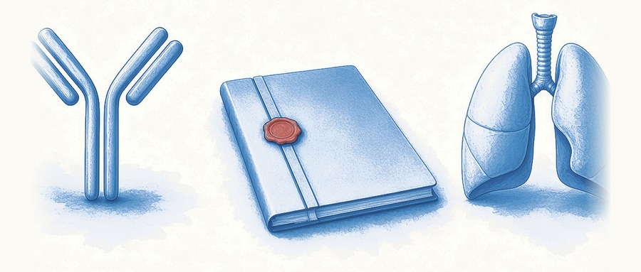

启光生物前沿 · 交易速递 整理日期：2026 年 11 月 15 日（美东） InLight 编辑部

AI 生成示意图，非真实场景或数据
2026 年 11 月 15 日，Summit Therapeutics 宣布，美国食品药品监督管理局（FDA）已对依沃西单抗（ivonescimab）联合含铂化疗的生物制品许可申请（BLA）发出完整回复函（CRL），申请未能以现有形式获批。依沃西单抗是康方生物（Akeso，港交所：09926）研发的 PD-1×VEGF 双特异性抗体，美国及其他授权地区权益由 Summit 持有。申报场景为既往接受过表皮生长因子受体（EGFR）酪氨酸激酶抑制剂（TKI）治疗的局部晚期或转移性非小细胞肺癌（NSCLC）。
时间线
· 2024 年 5 月：依沃西单抗在中国首次获批上市。
· 2026 年 1 月 29 日：FDA 受理该项 BLA，处方药用户费法案（PDUFA）目标审评日期定为 2026 年 11 月 14 日。
· 2026 年 11 月 15 日（星期日）：Summit 宣布收到完整回复函，晚于原定目标日期一天。截至该公告，公司未公布重新申报时间表。
关键事实
支持本次申请的是全球随机、双盲 III 期研究 HARMONi。试验比较依沃西单抗联合含铂化疗与安慰剂联合含铂化疗，入组患者为 EGFR 突变、局部晚期或转移性非鳞状 NSCLC、且既往接受过第三代 EGFR-TKI 治疗。研究设无进展生存期（PFS）和总生存期（OS）两个主要终点。
无进展生存期达到统计学显著。由独立影像评估委员会评估的中位无进展生存期为 6.8 个月对比 4.4 个月，风险比（HR）为 0.52（95% CI 0.41–0.66；p<0.0001）。Summit 称，这是该治疗场景下首个显示统计学显著无进展生存期改善的、基于免疫治疗方案的全球 III 期研究。
总生存期的主要分析未达统计学显著。该分析于 2025 年 4 月完成，依沃西单抗联合化疗组呈积极趋势：HR 为 0.79（95% CI 0.62–1.01；p=0.057），中位总生存期 16.8 个月对比 14.0 个月。其后，Summit 延长西方患者随访，并在 2026 年 6 月数据截止的更新分析中报告：全球意向性治疗人群 OS HR 为 0.76（95% CI 0.61–0.95；名义 p=0.0151）；亚洲患者与西方患者亚组的点估计同样为 0.76，但西方亚组的 95% 置信区间为 0.52–1.10，跨越 1。上述更新属于事后分析，并非主要分析。
据 Summit 转述，FDA 在完整回复函中指出：在缺乏统计学显著的总生存期改善时，尚未建立充分的有效性证据；在总生存期未达统计学显著的情况下，无进展生存期获益不足以支持有利于批准的获益-风险特征。申请因此不能以现有形式获批。Summit 同时称，目前该治疗场景尚无已获 FDA 批准、并证明统计学显著总生存期获益的方案。
安全性方面，Summit 11 月 15 日新闻稿称，依沃西单抗联合化疗的安全性可接受、可管理，与既往研究一致，未发现新的安全性信号。因治疗相关不良事件停用依沃西单抗者 16 例（7.3%），安慰剂组 11 例（5.0%）；因治疗相关不良事件死亡者分别为 4 例（1.8%）和 5 例（2.3%）。
Summit 董事长兼联席首席执行官 Robert Duggan 表示，对等待更多治疗选择的患者和家庭感到失望，并称 Summit 与康方已有五项 III 期研究取得阳性结果，公司将继续推进依沃西单抗的开发。新闻稿列出的在研项目包括一线转移性 NSCLC（HARMONi-3、HARMONi-7）以及结直肠癌、尿路上皮癌和肾细胞癌等。依沃西单抗在 Summit 授权地区（包括美国和欧洲）仍为在研药物，尚未获批；美国目前尚无已获批的 PD-1×VEGF 双特异性抗体。起草本稿时，尚未检索到康方生物就此次完整回复函发布的独立官方新闻稿，中文报道主要依据 Summit 公告。
市场方面，公告于美东时间星期日发布，美国常规交易休市，Summit（纳斯达克：SMMT）的常规交易反应需待周一开盘后观察。11 月 16 日港股开盘后，康方生物股价大幅下跌。据第一财经报道，截至当日上午 9:40，跌幅仍约 23.03%，公司市值不到 600 亿港元。此为盘中情况，并非收盘数据。
意义
此次决定推迟了 PD-1×VEGF 双抗在美国的首个潜在获批，也表明在该适应证上，FDA 要求统计学显著的总生存期改善，不以无进展生存期获益，以及未达显著或事后更新的生存趋势，作为批准依据。
来源
Summit Therapeutics 新闻稿，2026 年 11 月 15 日
https://www.smmttx.com/news/press-releases/news-details/2026/Summit-Therapeutics-Provides-Update-Regarding-Ivonescimab-Biologics-License-Application/default.aspx
Summit Therapeutics 新闻稿（FDA 受理 BLA 及 PDUFA 日期），2026 年 1 月 29 日
https://www.smmttx.com/news/press-releases/news-details/2026/Summit-Therapeutics-Announces-U-S--FDA-Acceptance-of-Biologics-License-Application-BLA-Seeking-Approval-for-Ivonescimab-in-Combination-with-Chemotherapy-in-Treatment-of-Patients-with-EGFRm-NSCLC-Post-TKI-Therapy/default.aspx
Summit Therapeutics 新闻稿（HARMONi 主要分析结果发表于《The Lancet Oncology》；无进展生存期数据），2026 年 8 月 25 日
https://smmttx.com/news/press-releases/news-details/2026/Ivonescimab-Plus-Chemotherapy-Global-Phase-III-HARMONi-Primary-Analysis-Results-Published-in-The-Lancet-Oncology/default.aspx
Summit Therapeutics 新闻稿（WCLC 2026 更新总生存期分析），用于主要分析与 2026 年 6 月更新分析的总生存期数字
https://smmttx.com/news/press-releases/news-details/2026/Updated-HARMONi-Data-Presented-at-WCLC-2026-Demonstrate-Consistent-Overall-Survival-Results-with-Ivonescimab-Plus-Chemotherapy-in-Western-and-Asian-Patients/default.aspx
路透社，2026 年 11 月 15 日（多家电台及转载稿引用）：报道 FDA 以总生存期未达统计学显著为由发出完整回复函
第一财经，2026 年 11 月 16 日（港股盘中跌幅，截至上午 9:40）
https://www.yicai.com/news/103441396.html
本稿为公开信息摘要，不构成投资建议。文中配图由 AI 生成，仅作示意，非数据图或期刊原图。所涉疗效与安全性数据以公司公开披露为准。本文整理日期：2026 年 11 月 15 日（美东）。勘误：contact@inlightbio.com
完整简报见启光生物网站（点击文末「阅读原文」）。网址可复制：
https://inlightbio.cn/pages/article/ivonescimab-fda-crl.html
InLight 编辑部
| 关注我们
| 鸣谢 · 友情合作伙伴
感谢以下合作伙伴的支持，推荐关注，互通有无：

长按识别二维码关注 · 欢迎同领域公众号联系友情合作